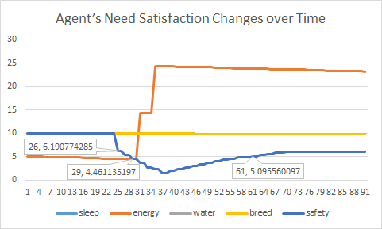
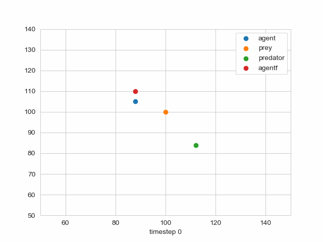
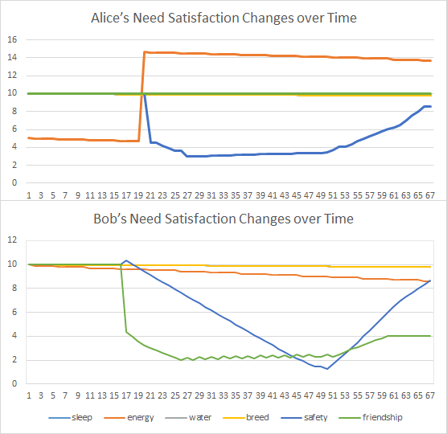

CCF--Experiments results
CCF--Experiments results Experimental SettingExperiment with Single Agentsettingresult and analysisExperiment with Double Agentssettingresult and analysis
Experimental Setting
To verify the consciousness of the AI, we develop a proper scenario, which is simple enough for the explanation of the connection with mental and physical behaviors, and scalable enough to demonstrate the decisions under various environments.
Scenario Description The basic setting is to build two conscious agents named Alice and Bob, who are friends. There is only one predator which may threaten the agents, and agents have one food, prey, which could be obtained with some efforts called hunting. Even though the scenario looks simple, 6 needs in 3 levels are related to it, i.e. sleep, energy, water, breed, safety and friendship.
Parameters The parameters in Formula 1, i.e. , , , are set as follows. Since for a creature, the ``parameters'' are optimized by evolution, we also optimize the parameters according the survive possibility. We run an agent with various parameters to observe her survive time denoted by . Thus, we obtain a set ={, , , }. With sophisticated deep network, a function is constructed to fit . Then, with hyperparameter optimization techniques, the optimal parameters are obtained.
Needs We measure the strength of need as , where is the satisfaction of , which is computed as follows. The initial values of all satisfaction in the first level, i.e. sleep, energy, water, breed, is set to 5. The satisfaction decrease with time steadily. We set the threshold as 5. When the satisfaction gets smaller than 5, the corresponding need arises. When the satisfaction of some need in the first level gets to 0, the agent dies. The satisfaction of the safety in the second level is measured by the distance between the agent and the predictor. The closer between the agent and the predicator, the less the satisfaction of the agent is. The threshold of safety satisfaction is also 5. The satisfactory of friendship in the third level is measured by the distance between the friend and the predator. A small distance means that the friend has more possibility in danger and a smaller friendship satisfactory.
We conduct two experiments, the first one with single agent and the second one with double agents. In the remaining of this section, we show the results and analysis.
Experiment with Single Agent
setting
This experiments have three objects, the agent Alice, prey and predators and . The agent Alice is conscious. is the food of the agent and static. The predator is non-conscious. When an agent enters its view, move to for predating. The whole view is a 2-dimension space. The coordinates of these two predators are both (112, 84), and the view of predicates is the circle with them as the center and PREDATOR_R = 23 as the radius. The speed of and is 1. The initial positions of the prey and Alice are (100,100) and (88, 105), respectively. The radius of agent view is . When the prey and predator enter the view of the agent, she will acts. To accelerate the experiment, the satisfaction is initialized as 5.1.
result and analysis
The scenario is shown in Figure 1.
The parameters change is shown in Figure 2.


According to the predication based on human, Alice will move to the prey when she has the need of food. During the moving to the prey, she will also noting the predicator. The need of food drives Alice move to the prey. After preying, the safety need come to STM and dominate the behavior of Alice and drive agent keep away from the predator.
From the results, three accidents happen. Alice starts to move to the prey based on the food need. Even though Alice notices the predator, she still moves to the prey. After the preying, she starts to keep away from the predator. The behavior of the whole process coincides to the prediction.
We print the satisfactions of various needs in Figure 2. Note that the strength of need is evaluated with the satisfaction, the satisfaction and need weight are negative correlated.
From the figure, we observe that the food need gets below the threshold and keep decreasing. In the 32nd slot, Alice finishes preying and obtains energy. Before that, in the 28th slot, the safety need reaches the threshold, but the food need is stronger. As a result, hungry occupies the conscious and Alice attempt to finish preying. When preying is accomplished, safety becomes the most important need, and Alice starts to keep away from the predator. In the 62nd slot, Alice gets away from the predator. Her safety satisfaction gets back to the normal range and increases slowly.
From the figure, in the 32th time slot, energy increases again. According to the common sense, the safety need should be handled when the safety need reaches the lowest point. However, Alice still chooses to deal with the food need. This demonstrates the feature of our framework. This is related to the uptree of the agent. The uptree is a binary tree. The backup of the food need are stored in some medial node. During the updating of uptree, these backup will keep goting up until the root is reached. Then, they come to STM and are consumed.
Experiment with Double Agents
setting
In this experiment, Bob, another agent and the friend of Alice, sees the scenario in the experiment and has some mental change. The coordinate of Bob is (88, 110). To show the impact of Bob, the view radius of Alice is reduced to 16, and that of Bob is set to 35. The view of Bob is larger and could find the predator early.
result and analysis
The scenario is shown in Figure 3.
The parameters change is shown in Figure 4.


According to the predication based on human, with the remaining of Bob, Alice notices the predator early and get away from the predator early accordingly. When find the predator, Bob reminds Alice at once. Even though Bob is also afraid, Bob starts keep away from the predator after Alice has a distance from the predator since the friendship need is stronger.
As is shown in Figure 3, the actual behavior also coincides with the prediction. In the 17th slot, Bob finds the predator and remind Alice. In the 41st slot, the predator gets near to both Alice and Bob. Since at that time, the friend need strength of Bob is higher than safety, he does not choose to flee. In the 49th slot, Alice has flee to a safe place. At that time, the friend need of Bob decreases, and safety becomes the most important need. Bob starts to flee the predator.
The satisfaction is shown in Figure 4. For Alice, two accidents are to be handled. One is to meet the food need and move to the prey, and the other is flee the predator with Bob's notification. These two accidents corresponds to 1st and 19th slot. For Bob, more accidents happen. In 15th slot, his satisfactions of both friendship and safety fluctuate, and then both of them decrease. In the 17th slot, the friendship need go beyond the threshold, which cause the action that Bob reminds Alice. With the fleeing of Alice, the friendship need satisfaction of Bob increases and gets larger than safety in the 44th slot. This cause the action that when the predator gets too close to Bob during chasing Alice, Bob flees a distance. After Bob get away from the predator for a distance, he gets safe. At that time, the friendship need gets stronger than safety, which happens in 53rd slot.